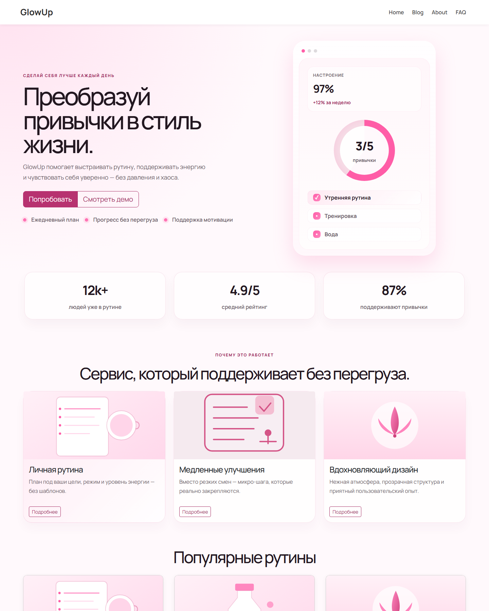
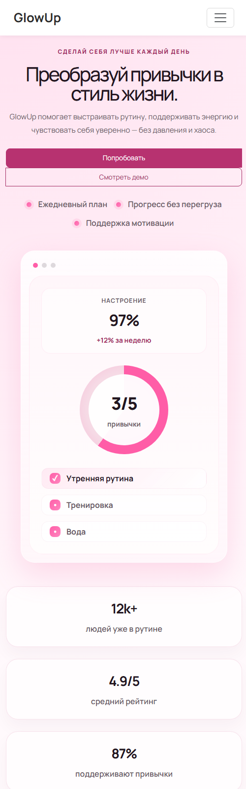
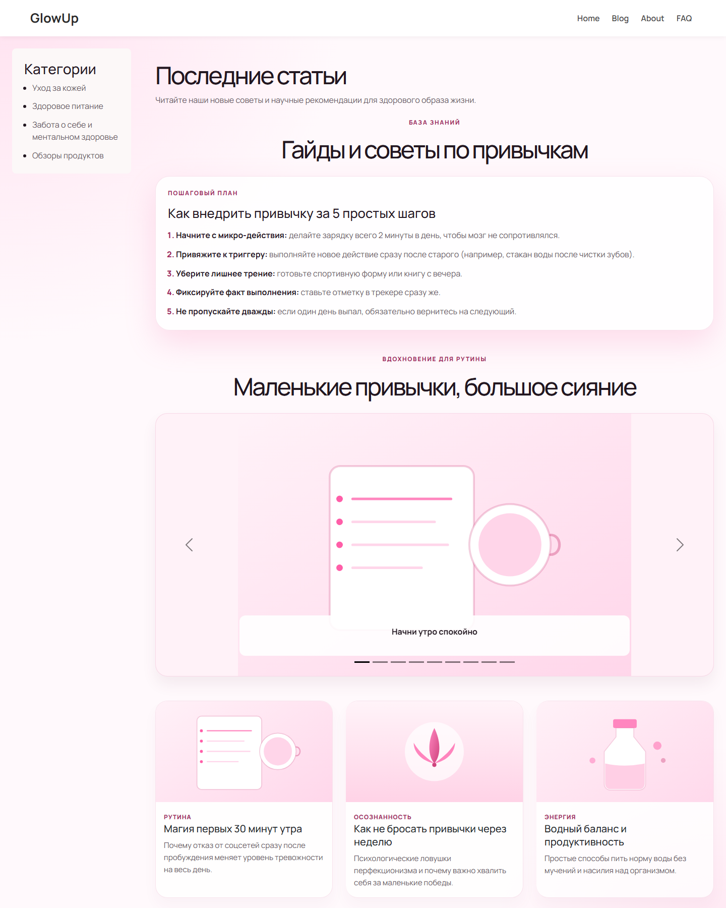
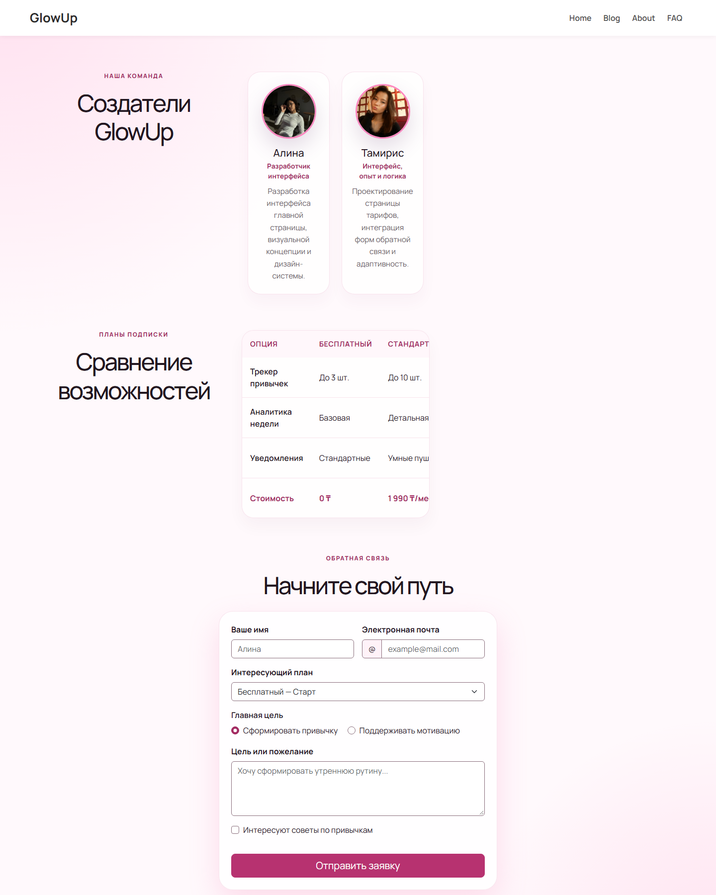

| Участники | Мукиева Тамирис Абдубек Алина |
| Группа | УКАЖИТЕ НОМЕР ГРУППЫ |
| Публичный URL | ДОБАВЬТЕ ССЫЛКУ ПОСЛЕ ПУБЛИКАЦИИ |
| Технологии | HTML5, CSS3, Bootstrap 5.3.8 |
2026
Цель работы — адаптировать существующий многостраничный сайт с помощью CSS media queries и Bootstrap, применить обязательные компоненты и сохранить семантичную, доступную разметку.
Проект состоит из страниц Home, Blog, About и FAQ. Все страницы связаны адаптивной Bootstrap Navbar и содержат footer с именами участников.
В CSS созданы отдельные диапазоны desktop, tablet и mobile. Размеры заголовков и вводного текста меняются без Bootstrap.
Три карточки на главной странице выводятся в 3, 2 и 1 колонку на desktop, tablet и mobile.
.cards-container { grid-template-columns: repeat(3, minmax(0, 1fr)); }
@media (min-width: 601px) and (max-width: 900px) {
.cards-container { grid-template-columns: repeat(2, minmax(0, 1fr)); }
}
@media (max-width: 600px) {
.cards-container { grid-template-columns: 1fr; }
}Для трёх колонок применены col-12 col-sm-6 col-md-6 col-lg-4, для двух — col-12 col-sm-12 col-md-6 col-lg-6.
Видимые отступы задаются классами m-*, p-*, px-sm-2, mt-lg-4, px-lg-5 и p-md-4. Собственные margin/padding удалены из styles.css.
На каждой странице есть navbar navbar-expand-lg с четырьмя ссылками и мобильной кнопкой раскрытия.
Использованы btn-primary, btn-outline-primary, btn-lg, btn-sm и btn-group. Собственная кнопка карточек заменена.
Blog содержит carousel из 9 изображений с индикаторами, подписями и кнопками управления.
Три карточки преимуществ находятся на Home; три карточки статей объединены в card-group на Blog.
Форма About использует Bootstrap Grid, form-control, form-select, form-check-input и input-group.
Использованы семантические элементы, связанные label, alt, aria-атрибуты, skip-link, заметный keyboard focus и prefers-reduced-motion.
Главная страница — desktop

Главная страница — mobile

Blog — Bootstrap carousel и карточки

About — Bootstrap Grid и адаптивная форма

Перед сдачей: заполнить номер группы и публичный URL на титульной странице после публикации проекта.